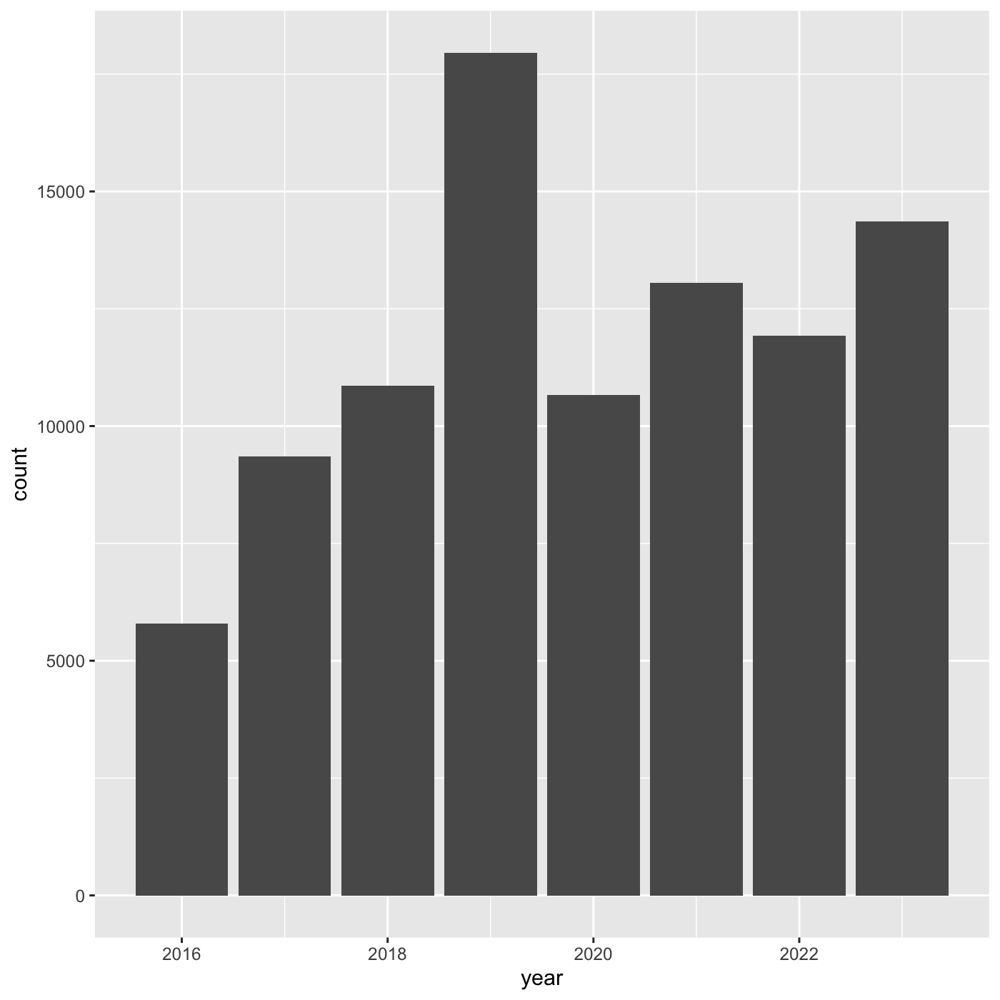
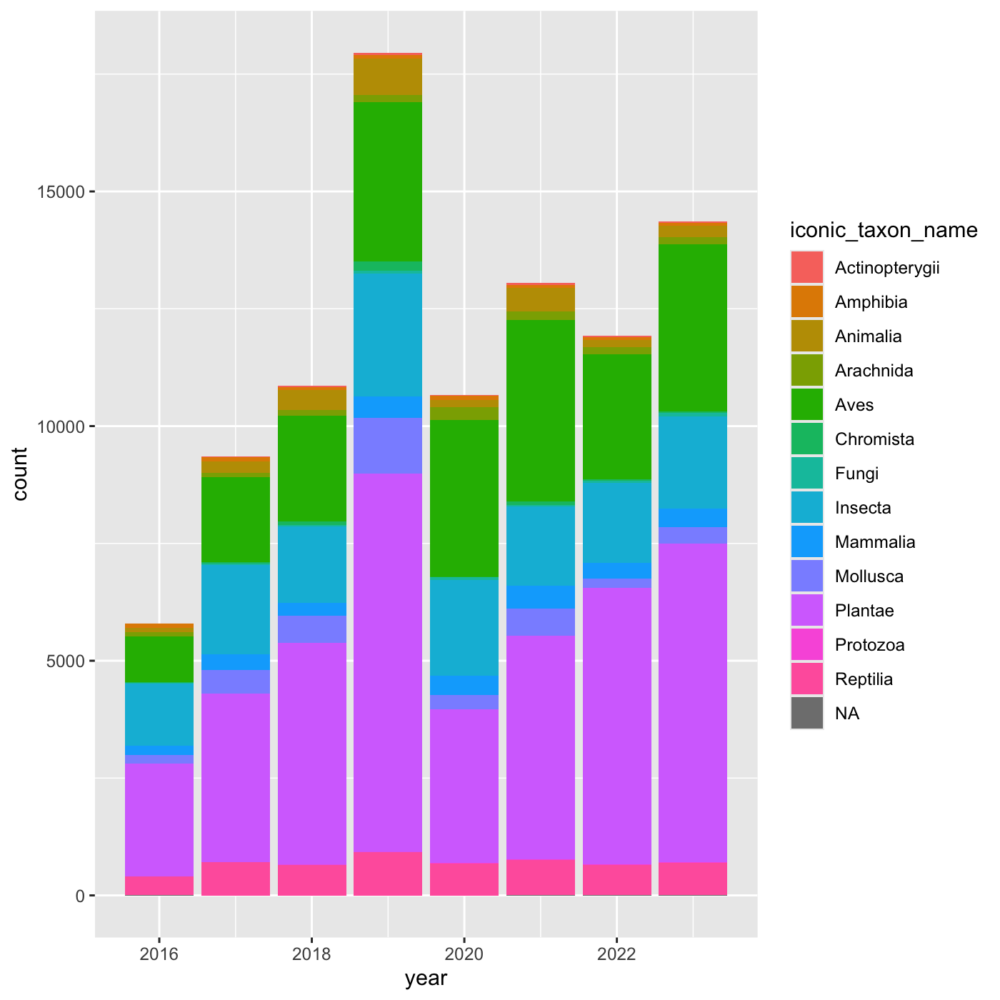

Data visualization with ggplot2
Last updated on 2024-05-24 | Edit this page
Estimated time: 94 minutes
Overview
Questions
- How do we create graphs using R?
Objectives
- Learn how to create bar and line charts using ggplot2
- Learn how to customize the appearance of the charts
R
library(ggplot2)
library(readr)
library(dplyr)
library(lubridate)
Creating graphs
We are going to be using functions from the
ggplot2 package to create visualizations.
ggplot plots are built step by step by
adding new layers, which allows for extensive customization of
plots.
We call ggplot() function, and pass in data and
mappings. Then we call a geom_ function to create the
plot.
ggplot(data = <DATA>, mapping = aes(<MAPPINGS>)) + <GEOM_FUNCTION>()
Setup
First, read data from the cleaned iNaturalist observation file.
R
inat <- read_csv('data/cleaned/observations.csv')
OUTPUT
Rows: 93950 Columns: 39
── Column specification ────────────────────────────────────────────────────────
Delimiter: ","
chr (23): observed_on_string, time_observed_at, time_zone, user_login, user...
dbl (10): id, user_id, num_identification_agreements, num_identification_di...
lgl (5): captive_cultivated, private_place_guess, private_latitude, privat...
date (1): observed_on
ℹ Use `spec()` to retrieve the full column specification for this data.
ℹ Specify the column types or set `show_col_types = FALSE` to quiet this message.Bar chart
Create a bar chart that shows the number of observations per year.
First, add year column to iNaturalist data.
R
inat_year <- inat %>%
mutate(year = year(observed_on))
Pass the data to ggplot.
R
ggplot(data = inat_year)
We need tell ggplot how to process the data. We tell ggplot how to
map the data to various plot elements, such as x/y axis, size, or color
by using the aes() function.
For bar charts, we need to tell what column to use for the x axis. We
want to create a plot with years on the x axis so we use
mapping = aes(x = year). ggplot will count the number of
rows for each year, and use the count for y axis.
R
ggplot(data = inat_year, mapping = aes(x = year))
 Next we need to specify how we want the data to be displayed. We do this
using
Next we need to specify how we want the data to be displayed. We do this
using geom_ functions, which specify the type of geometry
we want, such as points, lines, or bars. We use geom_bar()
to create a vertical bar plot.
We can add a geom_bar() layer to our plot by using the
+ sign. We indent onto a new line to make it easier to
read, and we have to end the first line with the
+ sign.
R
ggplot(data = inat_year, mapping = aes(x = year)) +
geom_bar()

If we want year on x axis, and count on y axis, use
coord_flip()
R
ggplot(data = inat_year, mapping = aes(x = year)) +
geom_bar() +
coord_flip()
Line chart
Create a line chart that shows the number of observations per year.
For line charts, we need both x and y variables. Create a dataframe that count the number of observations by year.
R
inat_year_count <- inat %>%
mutate(year = year(observed_on)) %>%
count(year, name='obs_count')
inat_year_count
OUTPUT
# A tibble: 8 × 2
year obs_count
<dbl> <int>
1 2016 5791
2 2017 9354
3 2018 10855
4 2019 17950
5 2020 10659
6 2021 13051
7 2022 11924
8 2023 14366We use year on the x axis and obs_count on the y axis. And we use
geom_line() for to create a line chart.
R
ggplot(data = inat_year_count,
mapping = aes(x = year, y=obs_count)) +
geom_line()
More bar plots
To create bar chart when we already have x and y, use
geom_col()
We want year on the x axis, and count on the y axis.
R
ggplot(data = inat_year_count,
mapping = aes(x = year, y = obs_count)) +
geom_col()

R
my_year <- inat %>%
mutate(year = year(observed_on)) %>%
filter(user_login == 'natureinla')
ggplot(data = my_year, mapping = aes(x = year)) +
geom_bar()
Changing aesthetics
Building ggplot plots is often an
iterative process, so we’ll continue developing the column plot we just
made. We can change the color of the bars using
fill='color'.
Use colors() to get a list of the 657 colors in R.
R
colors()
OUTPUT
[1] "white" "aliceblue" "antiquewhite" "antiquewhite1"
[5] "antiquewhite2" "antiquewhite3" "antiquewhite4" "aquamarine"
[9] "aquamarine1" "aquamarine2" "aquamarine3" "aquamarine4"
[13] "azure" "azure1" "azure2" "azure3"
[17] "azure4" "beige" "bisque" "bisque1"
[21] "bisque2" "bisque3" "bisque4" "black"
[25] "blanchedalmond" "blue" "blue1" "blue2"
[29] "blue3" "blue4" "blueviolet" "brown"
[33] "brown1" "brown2" "brown3" "brown4"
[37] "burlywood" "burlywood1" "burlywood2" "burlywood3"
[41] "burlywood4" "cadetblue" "cadetblue1" "cadetblue2"
[45] "cadetblue3" "cadetblue4" "chartreuse" "chartreuse1"
[49] "chartreuse2" "chartreuse3" "chartreuse4" "chocolate"
[53] "chocolate1" "chocolate2" "chocolate3" "chocolate4"
[57] "coral" "coral1" "coral2" "coral3"
[61] "coral4" "cornflowerblue" "cornsilk" "cornsilk1"
[65] "cornsilk2" "cornsilk3" "cornsilk4" "cyan"
[69] "cyan1" "cyan2" "cyan3" "cyan4"
[73] "darkblue" "darkcyan" "darkgoldenrod" "darkgoldenrod1"
[77] "darkgoldenrod2" "darkgoldenrod3" "darkgoldenrod4" "darkgray"
[81] "darkgreen" "darkgrey" "darkkhaki" "darkmagenta"
[85] "darkolivegreen" "darkolivegreen1" "darkolivegreen2" "darkolivegreen3"
[89] "darkolivegreen4" "darkorange" "darkorange1" "darkorange2"
[93] "darkorange3" "darkorange4" "darkorchid" "darkorchid1"
[97] "darkorchid2" "darkorchid3" "darkorchid4" "darkred"
[ reached getOption("max.print") -- omitted 557 entries ]R
ggplot(data = inat_year, mapping = aes(x = year)) +
geom_bar(fill='aquamarine')
 We can also use 6 digit hex color. You can use online tools to get hex
colors. https://html-color.codes
We can also use 6 digit hex color. You can use online tools to get hex
colors. https://html-color.codes
R
ggplot(data = inat_year, mapping = aes(x = year)) +
geom_bar(fill='#75cd5e')

Adding another variable
iNaturalist has af field called iconic_taxon_name that
assigns each taxa name to a some commonly known groups.
R
unique(inat$iconic_taxon_name)
OUTPUT
[1] "Mollusca" "Insecta" "Reptilia" "Aves"
[5] "Mammalia" "Plantae" "Animalia" "Arachnida"
[9] "Amphibia" "Fungi" "Chromista" "Actinopterygii"
[13] NA "Protozoa" Create charts that show the observations per year, and subdivide each
year by iconic_taxon_name. Give each
iconic_taxon_name a different color.
Since we’re now mapping a variable (iconic_taxon_name.)
to a component of the ggplot2 plot (fill), we need to put
the argument inside aes().
Create a bar chart that shows iconic_taxon_name by color.
R
ggplot(data = inat_year, mapping = aes(x = year, fill=iconic_taxon_name)) +
geom_bar()

We create a new dataframe that counts the number observations per year
and iconic_taxon_name. Use mutate() and year()
to add a year column. We want count by both
year and iconic_taxon_name. We want the column
to be called obs_count.
R
inat_year_iconic_count <- inat %>%
mutate(year = year(observed_on)) %>%
count(year, iconic_taxon_name, name='obs_count')
inat_year_iconic_count
OUTPUT
# A tibble: 107 × 3
year iconic_taxon_name obs_count
<dbl> <chr> <int>
1 2016 Actinopterygii 1
2 2016 Amphibia 87
3 2016 Animalia 87
4 2016 Arachnida 99
5 2016 Aves 976
6 2016 Chromista 9
7 2016 Fungi 24
8 2016 Insecta 1325
9 2016 Mammalia 192
10 2016 Mollusca 183
# ℹ 97 more rowsCreate a line chart that shows iconic_taxon_name by color.
R
inat_year_iconic_count %>%
ggplot(aes(x = year, y = obs_count, color = iconic_taxon_name)) +
geom_line()

Changing scales
The default color scheme isn’t friendly to viewers with
colorblindness. ggplot2 comes with quite a
few other color scales, including viridis scales, which are
designed to be colorblind and grayscale friendly. See a list of color
scales. https://ggplot2.tidyverse.org/reference/scale_colour_continuous.html
We can change scales by adding scale_ functions to our
plots:
R
ggplot(data = inat_year, mapping = aes(x = year, fill=iconic_taxon_name)) +
geom_bar() +
scale_fill_viridis_d()

Changing themes
we can assign a plot to an object
R
myplot <- ggplot(data = inat_year, mapping = aes(x = year)) +
geom_bar(fill='#75cd5e')
myplot

We can change the overall appearance using theme_
functions. Let’s try a black-and-white theme by adding
theme_bw() to our plot:
R
myplot +
theme_bw()
To see a list of available themes in ggplot, visit https://ggplot2.tidyverse.org/reference/index.html#themes
To individually change parts of a plot, we can use the
theme() function, which can take many different arguments
to change things about the text, grid lines, background color, and
more.
Let’s try changing the size of the text on our axis titles. We can do
this by specifying that the axis.title should be an
element_text() with size set to 14.
R
myplot +
theme_bw() +
theme(axis.title = element_text(size = 14))
Another change we might want to make is to remove the vertical grid
lines. To do this, inside theme(), we will change the
panel.grid.major.x to an element_blank().
R
myplot +
theme_bw() +
theme(axis.title = element_text(size = 14),
panel.grid.major.x = element_blank(),
panel.grid.minor.x = element_blank())
Because there are so many possible arguments to the
theme() function, it can sometimes be hard to find the
right one. Here are some tips for figuring out how to modify a plot
element:
- type out
theme(), put your cursor between the parentheses, and hit Tab to bring up a list of arguments- you can scroll through the arguments, or start typing, which will shorten the list of potential matches
- like many things in the
tidyverse, similar argument start with similar names- there are
axis,legend,panel,plot, andstriparguments
- there are
- arguments have hierarchy
-
textcontrols all text in the whole plot -
axis.titlecontrols the text for the axis titles -
axis.title.xcontrols the text for the x axis title
-
Changing labels
We customize the axis labels and add a chart title
labs() function.
R
myplot +
theme_bw() +
theme(axis.title = element_text(size = 14),
plot.title = element_text(face = "bold", size = 20)) +
labs(title = "CNC Los Angeles",
subtitle="Observations per year",
x = "Year",
y = "Observations")
R
my_yearly_plot <- inat %>%
mutate(year = year(observed_on)) %>%
filter(user_login == 'natureinla') %>%
ggplot(data = my_year, mapping = aes(x = year)) +
geom_bar(fill='#E0A90A')
my_yearly_plot +
theme_classic() +
labs(title = "CNC Los Angeles", x = "Year", y = "Observations")
Exporting plots
Once we are happy with ourplot, we can export the plot.
Assign the plot to an object. Then run ggsave() to save
our plot. The first argument we give is the path to the file we want to
save, including the correct file extension. You can save as jpb, pdf,
tiff, png. Next, we tell it the name of the plot object we want to save.
We can also specify things like the width and height of the plot in
inches.
R
finalplot <- myplot +
theme_bw() +
theme(axis.title = element_text(size = 14),
plot.title = element_text(face = "bold", size = 20)) +
labs(title = "CNC Los Angeles",
subtitle="Observations per year",
x = "Year",
y = "Observations")
R
ggsave(filename = 'data/cleaned/observations_per_year.jpg', plot = finalplot, height = 6, width = 8)